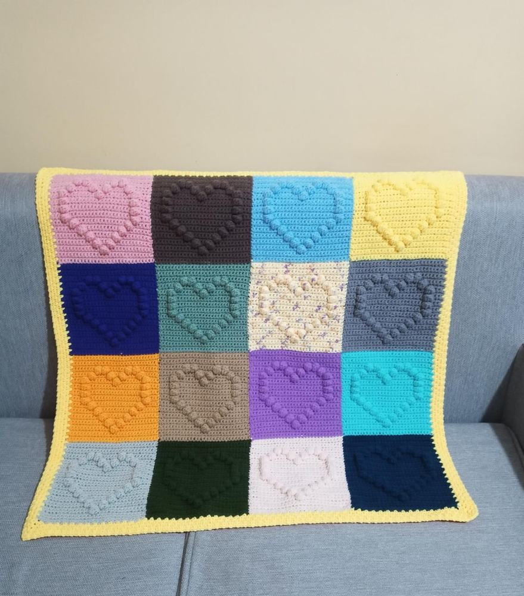
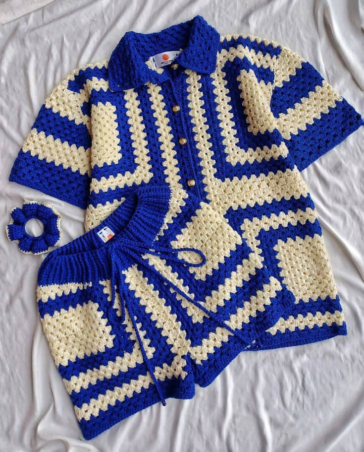
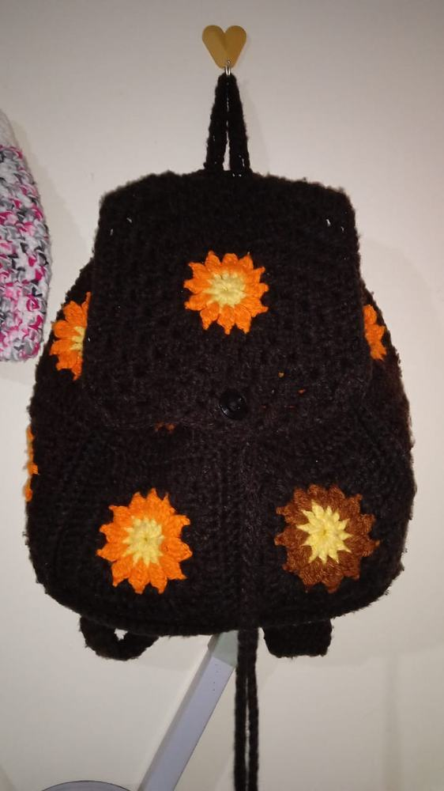
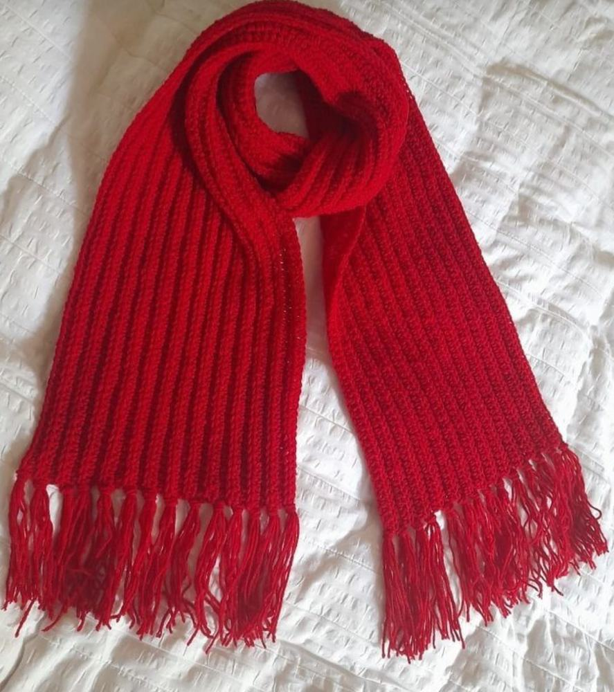

The story in every stitch
Disemba Crochet is a small handmade studio in Kenya, making crocheted bags, clothing and keepsakes — one stitch at a time, for one person at a time.

Colour is chosen the way you choose flowers — by feeling.
Where it begins
It starts with a hook, and a ball of yarn
Long before a bag is finished, there is a hook, a ball of yarn, and a quiet afternoon. Disemba Crochet works the way crochet has always been worked — slowly, by hand, one stitch after another.
There is no factory here and no hurry. Each piece is started for a person, in the colours they love and the size that actually fits them. That is why the collection is small, and why nothing is quite repeated.
With love, Disemba



The thinking behind it
Made to be worn, not kept for best
Handmade things are often saved for special days. We would rather they were lived in — a bag that goes to the market, a cardigan that gets borrowed, a blanket that smells of Sunday afternoons.
So the pieces are made to be sturdy as well as pretty: firm bases, generous straps, comfortable stitches. Beautiful, but on your side.
What we hold to
Four small promises
-
01
Worked entirely by hand
No machines, no shortcuts. Small irregularities are part of the charm, not something to hide.
-
02
Made to order
Your piece is started after you ask for it, in your size and your colours — never made in bulk to sit on a shelf.
-
03
Chosen together
Colours, sizing and delivery are talked through on WhatsApp, with a real person, gently and without pressure.
-
04
Cared for, so it lasts
Hand wash in cool water, squeeze softly, dry flat in the shade. Treated kindly, a piece can stay beautiful for years.

Handmade means someone gave it their time. That is the whole gift.
Disemba Crochet
Have something in mind? We would love to make it.
Tell us the colours, the occasion, or the piece you keep thinking about. There is no rush, and no pressure.